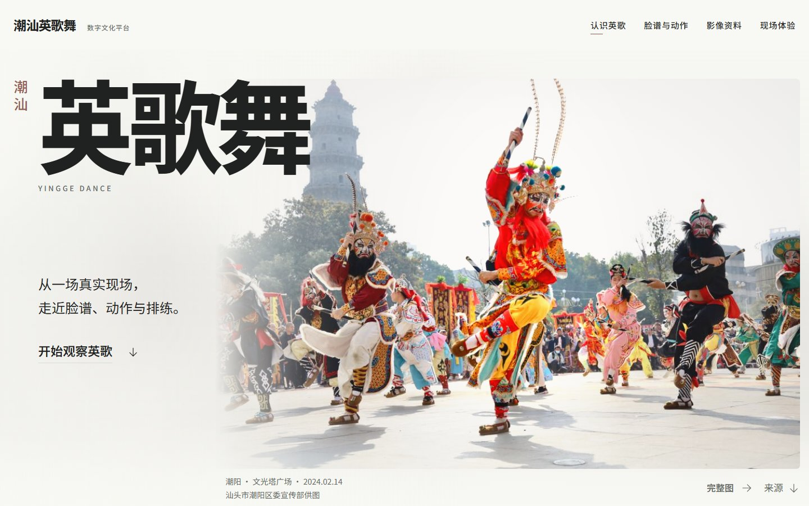
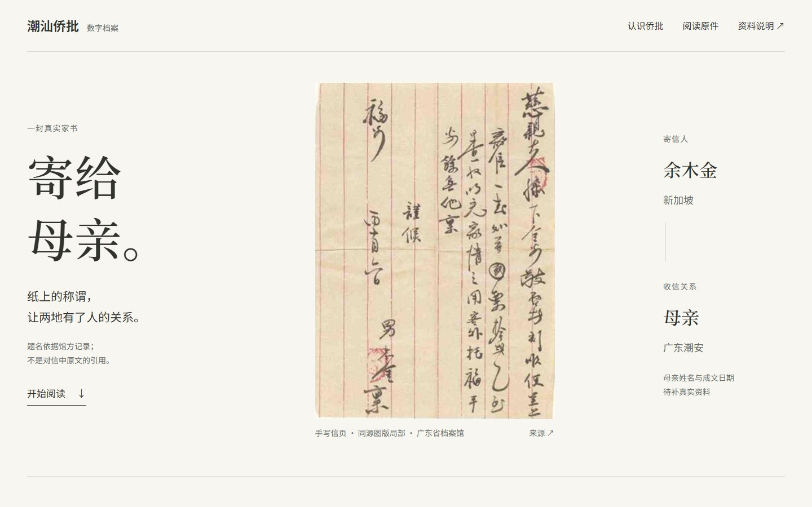
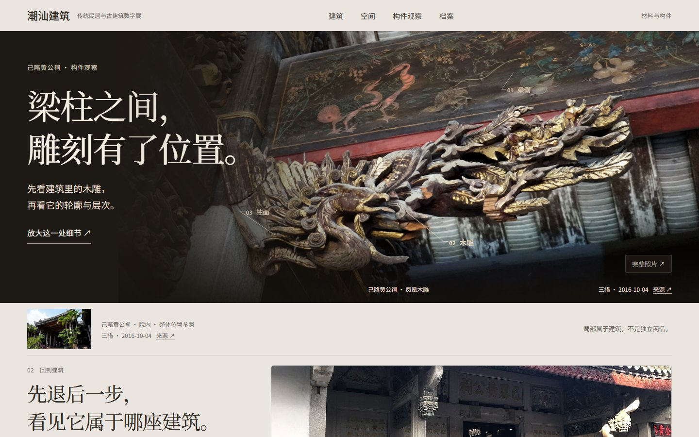

01 · Performance
潮汕英歌舞
数字文化平台
从一场真实现场，走近脸谱、动作、队伍与传承。身体与节奏成为第一视觉。
- 设计重点
- Editorial · 动作观察 · 页内照片预览
- 版本状态
- T3 · 冻结视觉基准



潮汕 · 视觉与交互研究
01 · Performance
从一场真实现场，走近脸谱、动作、队伍与传承。身体与节奏成为第一视觉。

02 · Archive
让手写纸页直接承担视觉。原件、寄收关系与资料边界形成三种不同的档案入口。

预览为候选 B；三个方向均保留。
03 · Architecture
从一块木雕退回建筑整体，再穿过空间、靠近材料，最后回到人、时间与档案。

关于这些作品
同一套观看判断，生成不同的视觉语言：英歌关注身体与节奏，侨批关注文字与人的关系，建筑关注位置、空间与材料。
这些项目是 UI / UX 视觉与交互原型。保留真实资料出处、完整观看与未知信息边界，不代表文化机构官方服务。部分影像仍为临时参考素材。
素材、字体与来源说明